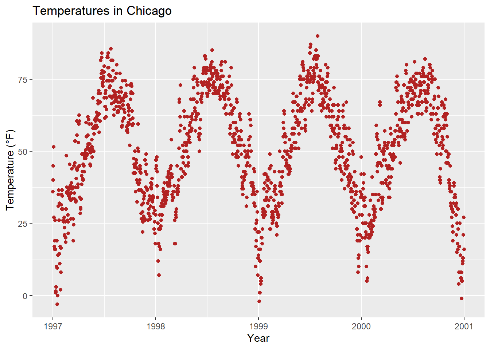
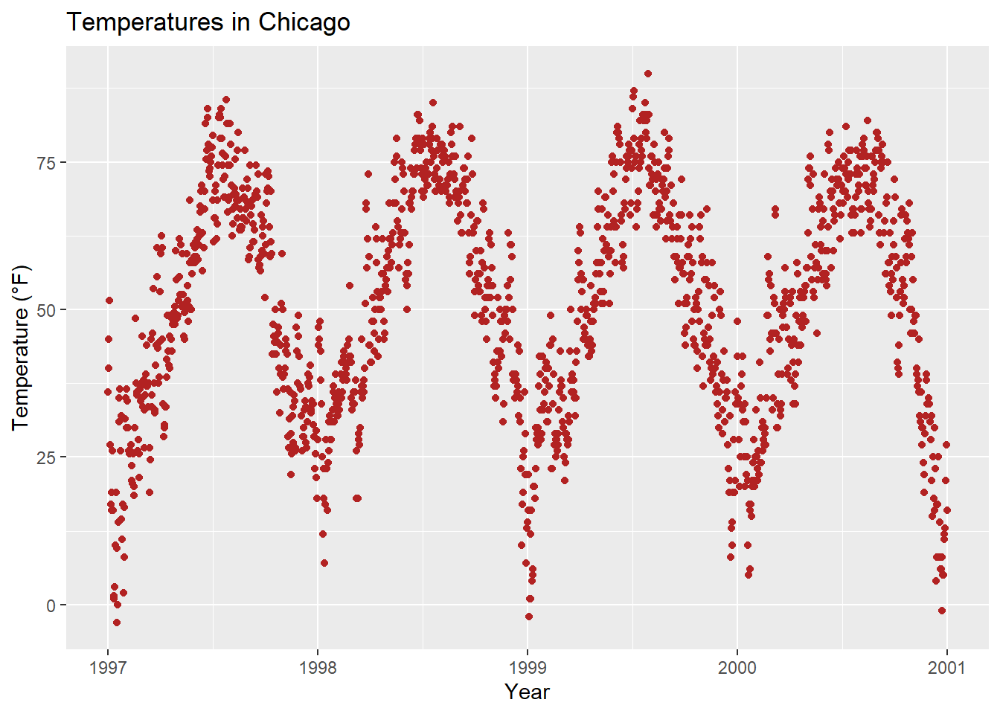

ggplot(chic, aes(x = date, y = temp)) +
geom_point(color = "firebrick") +
labs(x = "Year", y = "Temperature (°F)") +
ggtitle("Temperatures in Chicago")
We can add a title by using the ggtitle() function:
ggplot(chic, aes(x = date, y = temp)) +
geom_point(color = "firebrick") +
labs(x = "Year", y = "Temperature (°F)") +
ggtitle("Temperatures in Chicago")
Alternatively, you can utilize labs(). Here, you can include multiple arguments, such as a subtitle, a caption, and a tag, in addition to axis titles as demonstrated earlier:
ggplot(chic, aes(x = date, y = temp)) +
geom_point(color = "firebrick") +
labs(x = "Year", y = "Temperature (°F)",
title = "Temperatures in Chicago",
subtitle = "Seasonal pattern of daily temperatures from 1997 to 2001",
caption = "Data: NMMAPS",
tag = "Fig. 1")Once again, to adjust the properties of a theme element, we employ the theme() function. Similar to modifying text elements like axis.title and axis.text, we can alter the font face and margin for the title. These modifications apply not only to the title but also to other labels such as plot.subtitle, plot.caption, plot.tag, legend.title, legend.text, axis.title, and axis.text.
ggplot(chic, aes(x = date, y = temp)) +
geom_point(color = "firebrick") +
labs(x = "Year", y = "Temperature (°F)",
title = "Temperatures in Chicago") +
theme(plot.title = element_text(face = "bold",
margin = margin(10, 0, 10, 0),
size = 14))A helpful mnemonic for remembering the order of the margin sides is “t-r-ou-b-l-e”.
The general alignment (left, center, right) is controlled by hjust (horizontal adjustment):
ggplot(chic, aes(x = date, y = temp)) +
geom_point(color = "firebrick") +
labs(x = "Year", y = NULL,
title = "Temperatures in Chicago",
caption = "Data: NMMAPS") +
theme(plot.title = element_text(hjust = 1, size = 16, face = "bold.italic"))Certainly, it’s also possible to adjust the vertical alignment, which is controlled by vjust. Since 2019, users have been able to specify the alignment of the title, subtitle, and caption either based on the panel area (the default) or the plot margin via plot.title.position and plot.caption.position. The latter is often the preferred choice from a design perspective, as it yields better results in most cases. Many users have expressed satisfaction with this new feature, particularly as it addresses issues with alignment, especially when dealing with very long y-axis labels:
(g <- ggplot(chic, aes(x = date, y = temp)) +
geom_point(color = "firebrick") +
scale_y_continuous(label = function(x) {return(paste(x, "Degrees Fahrenheit"))}) +
labs(x = "Year", y = NULL,
title = "Temperatures in Chicago between 1997 and 2001 in Degrees Fahrenheit",
caption = "Data: NMMAPS") +
theme(plot.title = element_text(size = 14, face = "bold.italic"),
plot.caption = element_text(hjust = 0)))
g + theme(plot.title.position = "plot",
plot.caption.position = "plot")
You can incorporate different fonts, not just the default one provided by ggplot (which can vary between operating systems). Several packages facilitate the usage of fonts installed on your machine, such as the showtext package, which simplifies the utilization of various font types (TrueType, OpenType, Type 1, web fonts, etc.) in R plots.
Once the package is loaded, you’ll need to import the desired font, which must also be installed on your device. I often utilize Google fonts, which can be imported using the font_add_google() function. However, you can add other fonts using font_add() as well. It’s important to note that even when using Google fonts, you must install the font and restart RStudio to apply it. if you found any warnings after doing all the steps, or the fonts aren’t working. Just install extrafont package and run font_import() function to import all the fonts in your system. and then loadfonts(device = "win", quiet = TRUE) to load the fonts. It’ll work like a charm. You can also check the available fonts in your system by running fonts().
library(showtext)
library(extrafont)
font_add_google("Playfair Display", ## name of Google font
"Playfair Display") ## name that will be used in R
font_add_google("Bangers", "Bangers")
loadfonts(device = "win", quiet = TRUE)Now, we can use those font families by theme() function:
ggplot(chic, aes(x = date, y = temp)) +
geom_point(color = "firebrick") +
labs(x = "Year", y = "Temperature (°F)",
title = "Temperatures in Chicago",
subtitle = "Daily temperatures in °F from 1997 to 2001") +
theme(plot.title = element_text(family = "Bangers", hjust = .5, size = 25),
plot.subtitle = element_text(family = "Playfair Display", hjust = .5, size = 15))
You can also establish a non-default font for all text elements of your plots. For more details, refer to the section “Working with Themes”. In this case, I’ll use Roboto Condensed as the new font for all subsequent plots.
font_add_google("Roboto Condensed", "Roboto Condensed")
theme_set(theme_bw(base_size = 12, base_family = "Roboto Condensed"))
(Previously, this tutorial utilized the {extrafont} package, which performed admirably until last year. However, suddenly I encountered issues where I couldn’t add any new fonts, and even after acquiring a new laptop, the package failed to detect any fonts altogether. As an alternative, I typically recommend the {ragg} package now. However, I encountered difficulties in making it work for my homepage. Therefore, I’m utilizing the {showtext} package, which is also excellent, albeit with a key distinction: you need to explicitly import the font you wish to use with {showtext}. Nonetheless, it appears that there are some technical challenges that are not optimally resolved by {showtext} (as mentioned in this Twitter thread), so you may want to consider using the package only as a last resort.)
To modify the spacing between lines, you can utilize the lineheight argument. In the following example, I’ve compressed the lines together (lineheight < 1).
ggplot(chic, aes(x = date, y = temp)) +
geom_point(color = "firebrick") +
labs(x = "Year", y = "Temperature (°F)") +
ggtitle("Temperatures in Chicago\nfrom 1997 to 2001") +
theme(plot.title = element_text(lineheight = .8, size = 16))Now You can Change fonts on the fly!
ggplot(chic, aes(x = date, y = temp)) +
geom_point(color = "firebrick") +
labs(x = "Year", y = "Temperature (°F)") +
ggtitle("Temperatures in Chicago\nfrom 1997 to 2001") +
theme_bw(base_family = "Berkshire Swash")Or, Change it to Traditional Times New Roman:
ggplot(chic, aes(x = date, y = temp)) +
geom_point(color = "firebrick") +
labs(x = "Year", y = "Temperature (°F)") +
ggtitle("Temperatures in Chicago\nfrom 1997 to 2001") +
theme_bw(base_family = "Times New Roman")